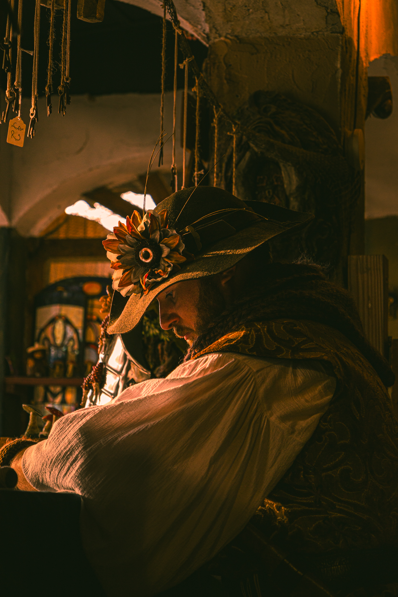

This photo has a warm, moody, and vintage feel, reminiscent of a Renaissance or medieval setting. It features a person dressed in historical or fantasy-inspired clothing, including a wide-brimmed hat adorned with a large decorative flower and feathers. The subject has a focused or contemplative expression, with soft lighting casting shadows across their face. The background is dimly lit, with hanging ropes, wooden structures, and stained-glass windows, adding to the rustic, old-world atmosphere. The rich, golden hues and detailed textures of the subject's attire create an immersive and cinematic aesthetic.